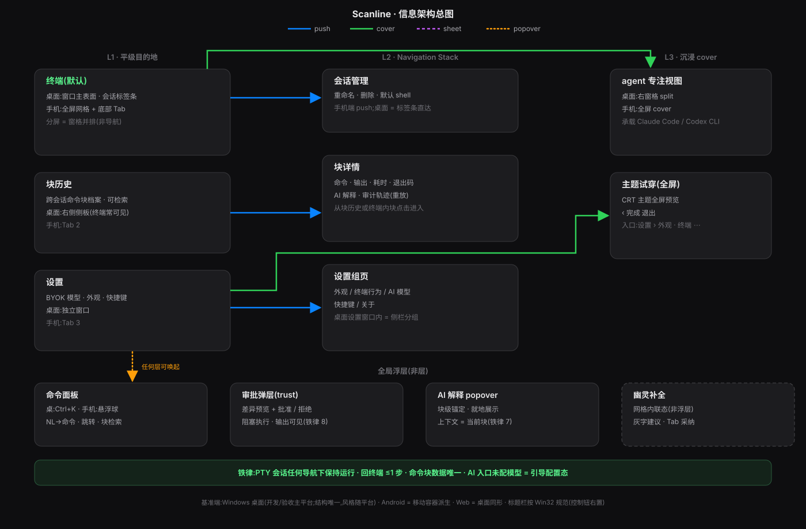

AI-native 终端 · Windows 桌面基准(结构唯一,风格随平台)· 配套 design_spec.md + tokens.json
阅读动线:应用层活动栏(会话之外)→ 终端视图 / 块历史视图 / 设置视图 → 全局浮层;箭头颜色区分 push / cover / sheet / popover

01-ia-flow.svg阅读动线:① 终端视图(默认)→ 活动栏切 ② 块历史 → 点卡片 ③ 块详情 → 活动栏切 ④ 设置
rail-terminal-view.html · HTML 轨blocks-history.html · HTML 轨block-detail.html · HTML 轨settings.html · HTML 轨阅读动线:类型菜单(+ 唤起)选型 → ① 文件(SFTP,v1.0)→ ② 隧道(v1.0)→ ③ 远程桌面(v1.0,IronRDP)→ ④ agent 窗格(MVP,split);均为会话类型,住标签条带类型图标
sessions-file.html · HTML 轨sessions-tunnel.html · HTML 轨sessions-rdp.html · HTML 轨agent-pane.html · HTML 轨阅读动线:任意视图 Ctrl+K 唤起 ① 命令面板 → NL 生成需确认;危险命令执行前 ② 审批弹层拦截
palette.html · HTML 轨trust-approval.html · HTML 轨阅读动线:空闲 → 重输出 → 幽灵补全 → 块成功/失败 → AI 解释 → 断线重连 → 全屏接管(骨架不变,只变内容)
terminal-idle.html · HTML 轨terminal-streaming.html · HTML 轨terminal-ghost.html · HTML 轨terminal-block-fail.html · HTML 轨terminal-ai-explain.html · HTML 轨terminal-disconnect.html · HTML 轨terminal-takeover.html · HTML 轨阅读动线:设计原则 → Token 全量在 tokens.json(此处仅摘要)
:root);语义 token 换值不换名;终端面 bg-term 恒深;CRT 主题族为 token 之上的皮肤层c-primary 品牌绿 c-brand 中性阶 ink-1..3 / sep;胶囊 r-capsule;玻璃 theme-blur(Apple 端原生 glassEffect,其余端降级)——全量见 tokens.json